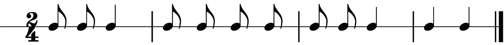
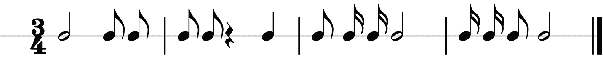
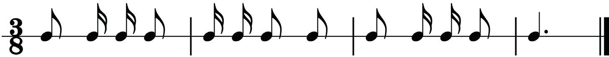
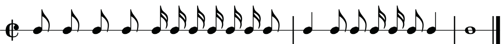
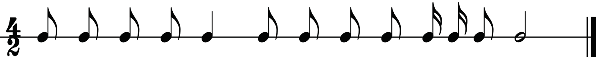
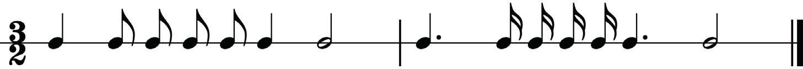
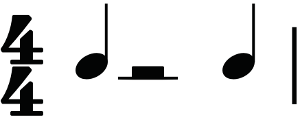
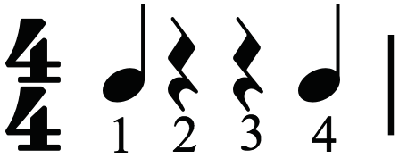

Rules in grouping notes and rests
In music, notes and rests are grouped according to the time signature to create a clear and organised rhythmic structure. The grouping helps performers understand the timing and emphasis of each beat within a measure. However, there are some rules to be observed when applying grouping in measures that include notes and rests. These rules include the following:
(a) Notes and rests should be grouped according to the division of a beat: When rests are used in a bar, they have to represent the main beat according to the time signature used. Figures 1.45 and 1.46 show the correct and incorrect ways in which rests can represent the main beat.
Incorrect
Correct


Figure 1.45: Correct and incorrect rests to represent the main beat in four-four time